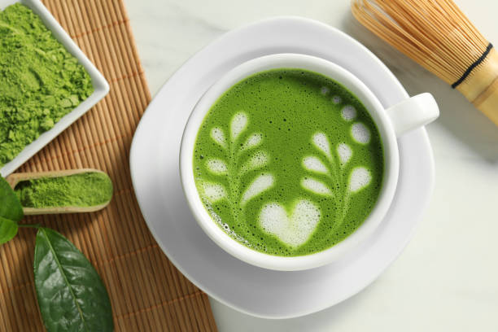
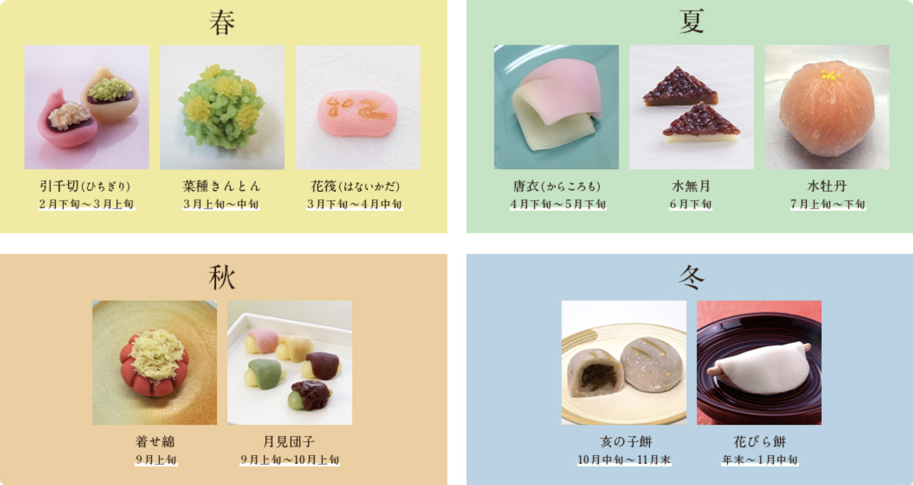

翠月について

古都・京都の歴史と風情が息づく東山の小道に佇む和カフェ「茶房 翠月（すいげつ）」。四季折々に表情を変える日本庭園を眺めながら、心安らぐ静謐なひとときをお過ごしいただけます。厳選された宇治抹茶と、職人が丹精込めて仕立てる季節の京菓子をご用意し、日常を離れた心地よい癒やしの時間をお届けいたします。
宇治抹茶・日本茶

茶処・京都宇治の老舗茶園より厳選した上質な茶葉を取り寄せております。丁寧に点てられた薫り高い宇治抹茶をはじめ、清々しい香りと奥深い甘みが特徴の玉露や深蒸し煎茶、香ばしい京番茶など、こだわり抜いた一杯をお楽しみください。
京菓子・甘味

京都の四季の移ろいを繊細に表現した、職人手作りの上生菓子（京菓子）をご提供しております。春の「引千切」や「菜種きんとん」、夏の涼やかな「水無月」、秋の風情漂う「月見団子」、そして冬を寿ぐ「花びら餅」など、時期ごとに最も美しい伝統菓子をお届けいたします。お抹茶の深い味わいを引き立てる上品な甘みと、目でも愉しめる二十四節気の美をご堪能ください。
店内のご案内

緑あふれる観葉植物と心地よい自然光に包まれた、開放感のあるモダンなカフェ空間です。オープンカウンターの落ち着いたバースタイルのほか、ゆったりとくつろげるソファ席やテーブル席をご用意しております。丁寧に淹れたお茶やコーヒーの香りに包まれながら、読書やお仕事、大切な方とのご歓談など、思い思いの特別なひとときをお過ごしいただけます。無料Wi-Fiや電源も完備しております。
店舗情報・アクセス

住所：京都府京都市東山区八坂通下河原東入ル八坂上町 388
営業時間：10:00 ～ 18:00（ラストオーダー 17:30）
定休日：毎週水曜日・第2木曜日
最寄駅：京阪本線「祇園四条駅」徒歩12分、または市バス「清水道」バス停より徒歩3分（八坂の塔すぐそば）。皆様のお越しを心よりお待ち申し上げております。